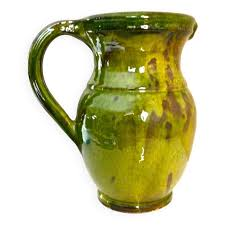

Céramique
CatalaneTerre, feu et couleurs du Roussillon


⟹ Savoir-faire potier du Roussillon ⟸
De part et d'autre des Pyrénées, la Catalogne appartient depuis des siècles au grand monde méditerranéen de la terre cuite. Dans le Roussillon, la présence d'argiles, l'économie agricole et les besoins domestiques ont favorisé une production avant tout utilitaire : jarres pour l'huile et le vin, cruches et pichets pour l'eau, plats, écuelles, pots de cuisson, bassines, tuiles et récipients de conservation. Bien avant d'être recherchées pour leur valeur décorative, ces pièces accompagnaient les gestes ordinaires de la maison, de la ferme et de la cave.
Cette poterie s'inscrit dans une histoire plus vaste d'échanges entre Catalogne du Nord et Catalogne du Sud. Les formes, les mots du métier et les usages circulent de part et d'autre de la frontière politique. La gerra, grande jarre pansue destinée notamment au stockage, et le càntir, récipient à eau muni de becs, appartiennent ainsi à un vocabulaire matériel catalan commun. La frontière de 1659 n'a pas fait disparaître cette continuité culturelle : les pratiques artisanales et les habitudes domestiques ont longtemps conservé des parentés étroites.

Le matériau impose une grande partie de l'esthétique. Après extraction et préparation de l'argile, le potier façonne la pièce au tour ou, pour certaines formes, par modelage et assemblage. Viennent ensuite le séchage, parfois un décor incisé ou appliqué, puis l'engobage et le vernissage. Les glaçures traditionnelles et les oxydes métalliques donnent une gamme chaude où dominent les terres rouges, l'ocre, le jaune-miel, le brun et le vert. L'oxyde de fer contribue aux tonalités jaunes, brunes ou rougeâtres ; le cuivre est associé aux verts caractéristiques. Les effets varient selon la composition de la terre, l'épaisseur de la glaçure, l'atmosphère du four et la température de cuisson.
La céramique populaire n'était pas figée dans un modèle unique. Chaque atelier travaillait avec ses terres, ses recettes de glaçure, ses tours de main et les commandes de sa clientèle. Les différences de profil d'une cruche, de largeur d'un col, de décor ou de couleur permettaient parfois de reconnaître une provenance ou une famille de potiers. Cette diversité explique pourquoi il est plus juste de parler de traditions céramiques catalanes que d'un style absolument uniforme.
Pendant des générations, l'atelier est une petite unité économique familiale. L'apprentissage se fait par observation et répétition : préparer la terre, centrer la motte sur le tour, monter une paroi régulière, poser une anse, maîtriser le séchage et surtout conduire le feu. La cuisson au four à bois constitue l'étape la plus délicate : une montée en température trop rapide, une mauvaise circulation de la chaleur ou une pièce encore humide peuvent ruiner plusieurs jours de travail. Le savoir du potier est donc autant celui de la terre que celui du feu.
À partir du XIXe siècle puis surtout au XXe siècle, l'industrialisation transforme profondément cet artisanat. La vaisselle manufacturée, le métal, le verre puis les matières plastiques remplacent une partie des récipients en terre dans les usages quotidiens. De nombreux ateliers familiaux disparaissent ou réduisent leur activité. La poterie utilitaire cesse progressivement d'être un équipement indispensable du foyer et devient davantage un objet décoratif, patrimonial ou artistique.
Cette mutation ne signifie pourtant pas la disparition du savoir-faire. Au XXe siècle, l'intérêt renouvelé des artistes pour la céramique, particulièrement fort dans le Midi et en Catalogne, contribue à changer le regard porté sur la terre cuite. Dans le Roussillon, des artisans et créateurs contemporains reprennent le tournage, l'engobe, les glaçures et la cuisson traditionnelle tout en développant des formes personnelles. L'objet d'usage devient aussi pièce unique, sculpture ou support d'expérimentation.
Aujourd'hui, la céramique catalane se situe ainsi au croisement de plusieurs héritages : mémoire de la vie rurale, culture méditerranéenne, vocabulaire catalan, maîtrise technique du tour et du four, mais aussi création contemporaine. Les collections ethnographiques et les ateliers encore actifs permettent de suivre cette longue évolution, de l'humble récipient domestique à l'objet d'art.
La terre, l'eau, l'air du séchage et le feu du four : la poterie catalane est d'abord l'art de transformer quatre éléments en objets du quotidien.
— Synthèse historique du savoir-faire potierLa céramique catalane s'est longtemps transmise dans un cadre familial, de maître à apprenti, chaque village ayant parfois ses formes ou ses teintes particulières. Cette organisation artisanale a laissé place, au fil du XXe siècle, à des ateliers individuels, où potiers et céramistes assument seuls tournage, décor et cuisson.
Travailler la terre catalane, c'est renouer avec un geste répété depuis des générations, tout en cherchant sa propre couleur.
— Un céramiste du RoussillonAujourd'hui, ces ateliers se concentrent surtout autour de Perpignan et dans les villages du Vallespir et des Aspres, où l'on peut souvent observer le tournage, découvrir les fours et acheter directement les pièces produites sur place. Certains proposent des stages d'initiation, contribuant à faire vivre ce savoir-faire auprès d'un public plus large.
Céret ville des peintres cubistes, elle abrite aussi des ateliers de céramistes installés dans le sillage des artistes du XXe siècle.
Perpignan l'ancienne capitale des rois de Majorque conserve, au fil de ses musées, des collections de céramique catalane ancienne.
Prieuré de Serrabone et abbaye de Cuxa ces deux édifices romans voisins témoignent d'un autre savoir-faire régional, celui de la sculpture sur marbre rose.
Ille-sur-Têt ce village des Aspres est connu pour ses orgues géologiques et sa tradition ancienne liée à l'argile et à la brique.